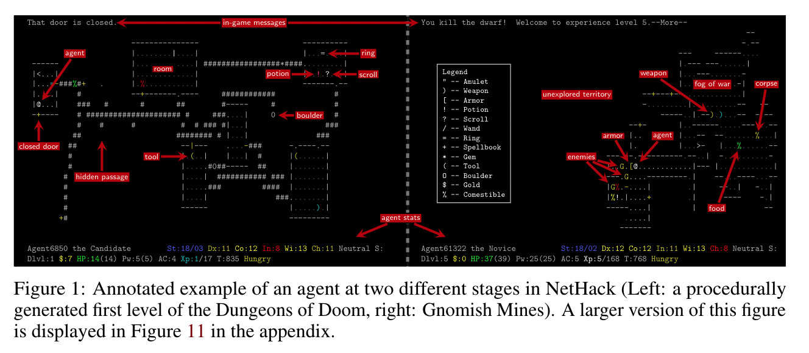

[TOC]
- Title: The NetHack Learning Environment
- Author: Heinrich Kuttler et. al.
- Publish Year: Dec 2020
- Review Date: Mar 2022
Summary of paper
The NetHack Learning Environment (NLE), a scalable, procedurally generated, stochastic, rich, and challenging environment for RL research based on the popular single-player terminal-based roguelike game, NetHack.
NetHack is sufficiently complex to drive long-term research on problems such as exploration, planning, skill acquisition, and language-conditioned RL, while dramatically reducing the computational resources required to gather a large amount of experience.
Limitations of existing environment and methods
Go-Explore, overfits to specific properties of ALE and Montezuma’s Revenge. While Go-Explore is an impressive solution for Montezuma’s Revenge, it exploits the determinism of environment transitions, allowing it to memorize sequences of actions that lead to previously visited states from which the agent can continue to explore
NetHack, however, can surpass the limits of deterministic or repetitive settings because its environment is procedurally generated.
Many aspects of the game are procedurally generated and follow stochastic dynamics.
The procedurally generated content of each level makes it highly unlikely that a player will ever experience the exact same situation more than once.

Long game and sparse rewards
NetHack is an extremely long game. Successful expert episodes usually last tens of thousands of turns, while average successful runs can easily last hundreds of thousands of turns, spawning multiple days of play-time. Compared to testbeds with long episode horizons such as StarCraft and Dota 2, NetHack’s “episodes” are one or two orders of magnitude longer, and they wildly vary depending on the policy.
NetHack and Natural Language resources
NetHack’s popularity has attracted a larger number of contributors to its community. Consequently, there exists a comprehensive game wiki and many so-called spoilers that provide advice to players. Due to the randomized nature of NetHack, this advice is general in nature (e.g., explaining the behavior of various entities) and not a step-by-step guide. These texts could be used for language-assisted RL. Lastly, there is also a large public repository of human replay data (over five million games) hosted on the NetHack Alt.org (NAO) servers, with hundreds of finished games per day on average. This extensive dataset could spur research advances in imitation learning, inverse RL, and learning from demonstrations.
In addition, the extensive documentation about NetHack can enable research on using prior (natural language) knowledge for learning, which could lead to improvements in generalization and sample efficiency
Tasks
To demonstrate that NetHack is a suitable testbed for advancing RL, they have a set of initial tasks for tractable subgoals in the game:
- navigating to a staircase down to the next level, navigating to a staircase
- while being accompanied by a pet, locating
- and eating edibles,
- collecting gold,
- maximizing in-game score,
- scouting to discover unseen parts of the dungeon,
- and finding the oracle.